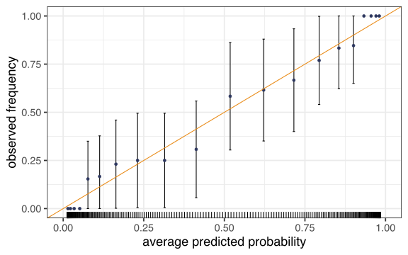
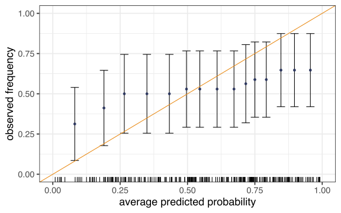
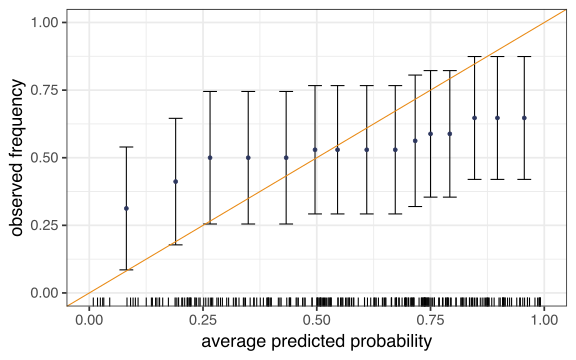

[,1] [,2]
[1,] 0 1000000
[2,] 10 000 Evaluating classifiers
Stat 406
Geoff Pleiss, Trevor Campbell
Last modified – 23 October 2024
\[ \DeclareMathOperator*{\argmin}{argmin} \DeclareMathOperator*{\argmax}{argmax} \DeclareMathOperator*{\minimize}{minimize} \DeclareMathOperator*{\maximize}{maximize} \DeclareMathOperator*{\find}{find} \DeclareMathOperator{\st}{subject\,\,to} \newcommand{\E}{E} \newcommand{\Expect}[1]{\E\left[ #1 \right]} \newcommand{\Var}[1]{\mathrm{Var}\left[ #1 \right]} \newcommand{\Cov}[2]{\mathrm{Cov}\left[#1,\ #2\right]} \newcommand{\given}{\ \vert\ } \newcommand{\X}{\mathbf{X}} \newcommand{\x}{\mathbf{x}} \newcommand{\y}{\mathbf{y}} \newcommand{\P}{\mathcal{P}} \newcommand{\R}{\mathbb{R}} \newcommand{\norm}[1]{\left\lVert #1 \right\rVert} \newcommand{\snorm}[1]{\lVert #1 \rVert} \newcommand{\tr}[1]{\mbox{tr}(#1)} \newcommand{\brt}{\widehat{\beta}^R_{s}} \newcommand{\brl}{\widehat{\beta}^R_{\lambda}} \newcommand{\bls}{\widehat{\beta}_{ols}} \newcommand{\blt}{\widehat{\beta}^L_{s}} \newcommand{\bll}{\widehat{\beta}^L_{\lambda}} \newcommand{\U}{\mathbf{U}} \newcommand{\D}{\mathbf{D}} \newcommand{\V}{\mathbf{V}} \]
How do we measure accuracy?
So far — 0-1 loss. If correct class, lose 0 else lose 1.
Generalization: Asymmetric classification loss — If correct class, lose 0 else lose something.
E.g. MRI screening. Goal is “person OK”, “person has a disease”
- If classify OK, but was disease, lose 1,000,000
- If classify disease, but was OK, lose 10
- etc.
Results in a 2x2 matrix of losses with 0 on the diagonal.
Deviance loss
Sometimes we output probabilities as well as class labels.
For example, logistic regression returns the probability that an observation is in class 1. \(P(Y_i = 1 \given x_i) = 1 / (1 + \exp\{-x'_i \hat\beta\})\)
LDA and QDA produce probabilities as well. So do Neural Networks (typically)
(Trees “don’t”, neither does KNN, though you could fake it)
- Deviance loss for 2-class classification is \(-2\textrm{loglikelihood}(y, \hat{p}) = -2 (y_i x'_i\hat{\beta} - \log (1-\hat{p}))\)
- Could also use cross entropy or Gini index.
Calibration
Suppose we predict some probabilities for our data, how often do those events happen?
In principle, if we predict \(\hat{p}(x_i)=0.2\) for a bunch of events observations \(i\), we’d like to see about 20% 1 and 80% 0. (In training set and test set)
The same goes for the other probabilities. If we say “20% chance of rain” it should rain 20% of such days.
Of course, we didn’t predict exactly \(\hat{p}(x_i)=0.2\) ever, so lets look at \([.15, .25]\).
Calibration plot
n <- 250
dat <- tibble(
x = seq(-5, 5, length.out = n),
p = 1 / (1 + exp(-x)),
y = rbinom(n, 1, p)
)
fit <- glm(y ~ x, family = binomial, data = dat)
dat$phat <- predict(fit, type = "response") # predicted probabilities
binary_calibration_plot <- function(y, phat, nbreaks = 10) {
dat <- tibble(y = y, phat = phat) |>
mutate(bins = cut_number(phat, n = nbreaks))
midpts <- quantile(dat$phat, seq(0, 1, length.out = nbreaks + 1), na.rm = TRUE)
midpts <- midpts[-length(midpts)] + diff(midpts) / 2
sum_dat <- dat |>
group_by(bins) |>
summarise(
p = mean(y, na.rm = TRUE),
se = sqrt(p * (1 - p) / n())
) |>
arrange(p)
sum_dat$x <- midpts
ggplot(sum_dat, aes(x = x)) +
geom_errorbar(aes(ymin = pmax(p - 1.96 * se, 0), ymax = pmin(p + 1.96 * se, 1))) +
geom_point(aes(y = p), colour = blue) +
geom_abline(slope = 1, intercept = 0, colour = orange) +
ylab("observed frequency") +
xlab("average predicted probability") +
coord_cartesian(xlim = c(0, 1), ylim = c(0, 1)) +
geom_rug(data = dat, aes(x = phat), sides = "b")
}Amazingly well-calibrated
Less well-calibrated
True positive, false negative, sensitivity, specificity
- True positive rate
- # correct predict positive / # actual positive (1 - FNR)
- False negative rate
- # incorrect predict negative / # actual positive (1 - TPR), Type II Error
- True negative rate
- # correct predict negative / # actual negative
- False positive rate
- # incorrect predict positive / # actual negative (1 - TNR), Type I Error
- Sensitivity
- TPR, 1 - Type II error
- Specificity
- TNR, 1 - Type I error
Decision making
Given a logistic regression output \(\hat P(Y \mid X) = 0.56\), should we assign \(\hat Y = 1\) or \(\hat Y = 0\)?
E.g. \(P(Y=1 \mid X)\) is predicted probability that email \(X\) is spam.
Do we send it to the spam folder (\(\hat Y=1\)) or the inbox (\(\hat Y=0\))?
So far we’ve been making the “decision” \(\hat Y=1\) if \(\hat P(Y=1 \mid X) > \hat P(Y=0 \mid X)\)
i.e. \(\hat Y = \begin{cases} 1 & \hat P(Y=1 \mid X) > 0.5 \\ 0 & \mathrm{o.w.} \end{cases}\).
But maybe (for our application) a “better” decision is \[\hat Y = \begin{cases} 1 & \hat P(Y=1 \mid X) > t \\ 0 & \mathrm{o.w.} \end{cases}\]
ROC and thresholds
- ROC (Receiver Operating Characteristic) Curve
- TPR (sensitivity) vs. FPR (1 - specificity)
- Each point corresponds to a different \(0 \leq t \leq 1\).
- AUC (Area under the curve)
- Integral of ROC. Closer to 1 is better.
roc <- function(prediction, y) {
op <- order(prediction, decreasing = TRUE)
preds <- prediction[op]
y <- y[op]
noty <- 1 - y
if (any(duplicated(preds))) {
y <- rev(tapply(y, preds, sum))
noty <- rev(tapply(noty, preds, sum))
}
tibble(
FPR = cumsum(noty) / sum(noty),
TPR = cumsum(y) / sum(y)
)
}
ggplot(roc(dat$phat, dat$y), aes(FPR, TPR)) +
geom_step(colour = blue, size = 2) +
geom_abline(slope = 1, intercept = 0)
Other stuff

- Source: worth exploring Wikipedia
Next time …
Module 4
boosting, bagging, random forests, and neural nets
UBC Stat 406 - 2024